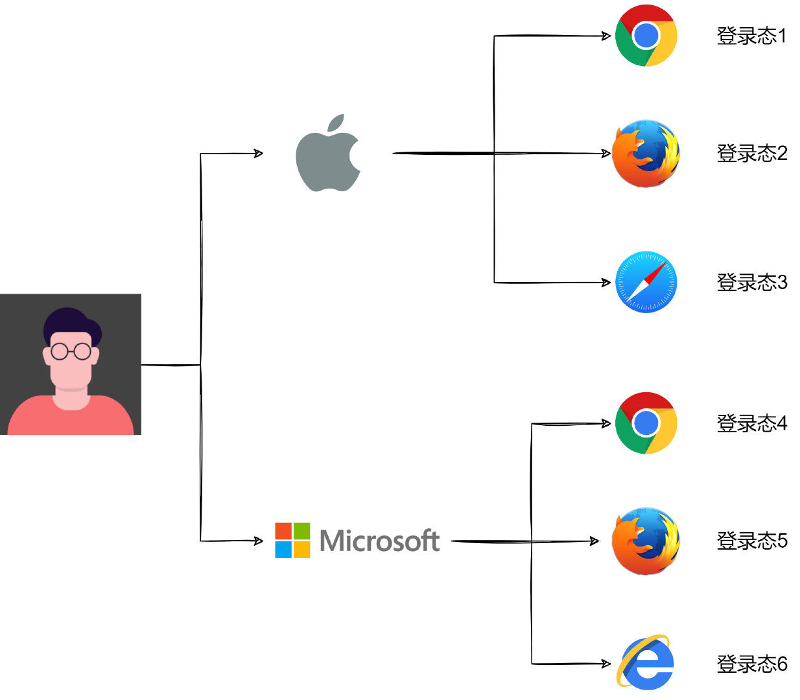
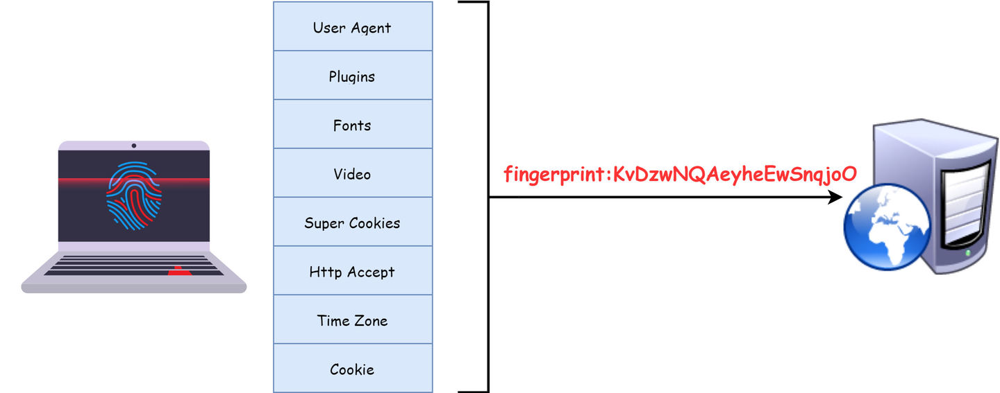
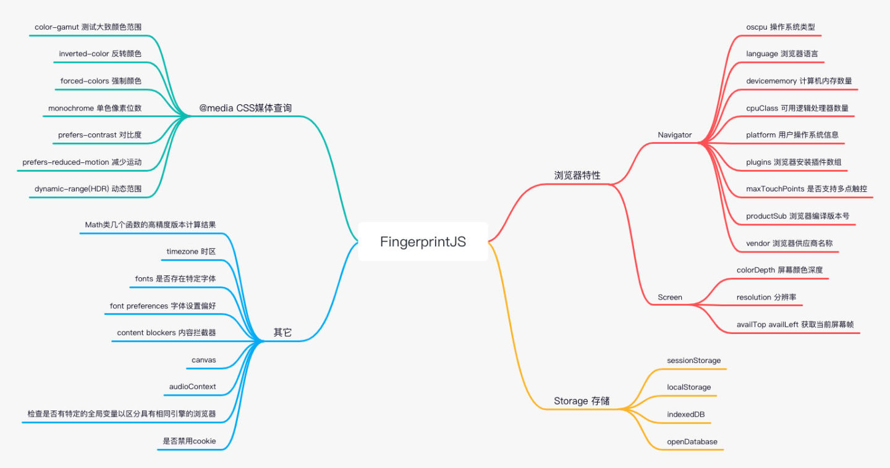
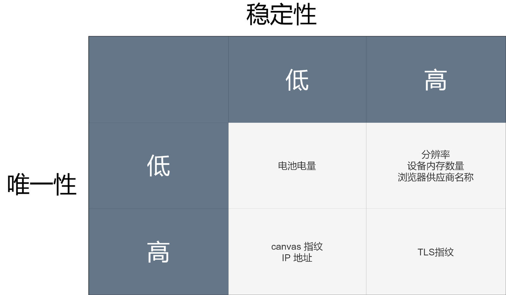
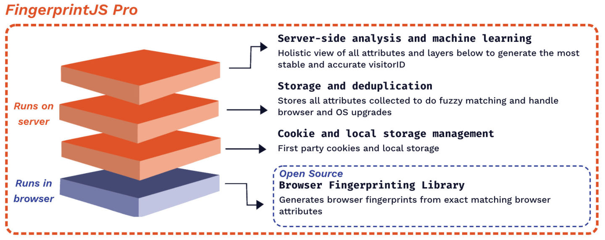
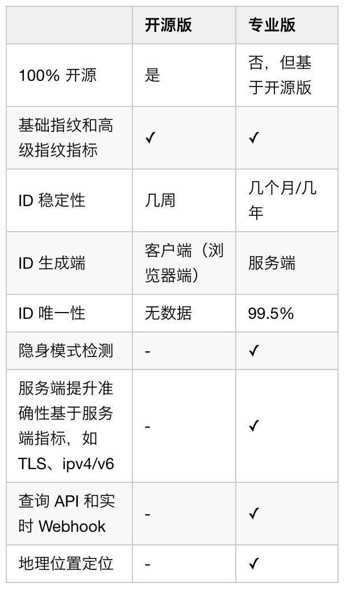
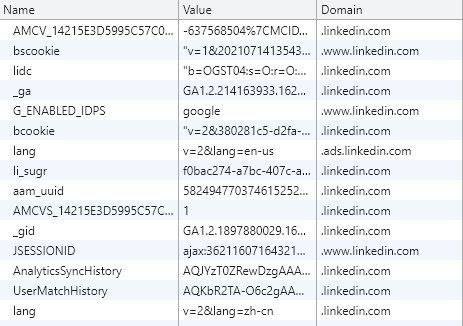
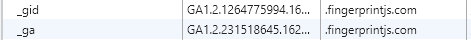
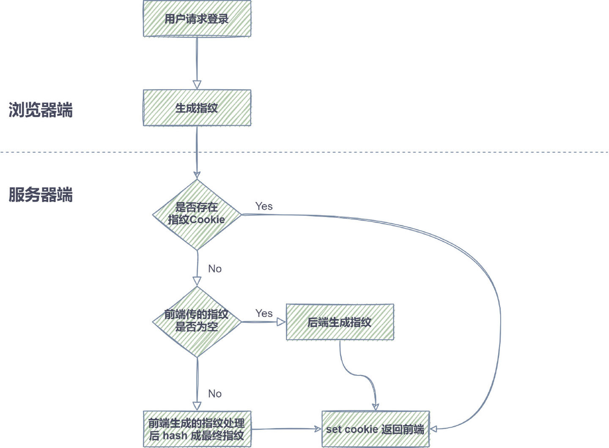

- AQS 万字图文全面解析.md.html
- Docker 镜像构建原理及源码分析.md.html
- ElasticSearch 小白从入门到精通.md.html
- JVM CPU Profiler技术原理及源码深度解析.md.html
- JVM 垃圾收集器.md.html
- JVM 面试的 30 个知识点.md.html
- Java IO 体系、线程模型大总结.md.html
- Java NIO浅析.md.html
- Java 面试题集锦（网络篇）.md.html
- Java-直接内存 DirectMemory 详解.md.html
- Java中9种常见的CMS GC问题分析与解决（上）.md.html
- Java中9种常见的CMS GC问题分析与解决（下）.md.html
- Java中的SPI.md.html
- Java中的ThreadLocal.md.html
- Java线程池实现原理及其在美团业务中的实践.md.html
- Java魔法类：Unsafe应用解析.md.html
- Kafka 源码阅读笔记.md.html
- Kafka、ActiveMQ、RabbitMQ、RocketMQ 区别以及高可用原理.md.html
- MySQL · 引擎特性 · InnoDB Buffer Pool.md.html
- MySQL · 引擎特性 · InnoDB IO子系统.md.html
- MySQL · 引擎特性 · InnoDB 事务系统.md.html
- MySQL · 引擎特性 · InnoDB 同步机制.md.html
- MySQL · 引擎特性 · InnoDB 数据页解析.md.html
- MySQL · 引擎特性 · InnoDB崩溃恢复.md.html
- MySQL · 引擎特性 · 临时表那些事儿.md.html
- MySQL 主从复制 半同步复制.md.html
- MySQL 主从复制 基于GTID复制.md.html
- MySQL 主从复制.md.html
- MySQL 事务日志(redo log和undo log).md.html
- MySQL 亿级别数据迁移实战代码分享.md.html
- MySQL 从一条数据说起-InnoDB行存储数据结构.md.html
- MySQL 地基基础：事务和锁的面纱.md.html
- MySQL 地基基础：数据字典.md.html
- MySQL 地基基础：数据库字符集.md.html
- MySQL 性能优化：碎片整理.md.html
- MySQL 故障诊断：一个 ALTER TALBE 执行了很久，你慌不慌？.md.html
- MySQL 故障诊断：如何在日志中轻松定位大事务.md.html
- MySQL 故障诊断：教你快速定位加锁的 SQL.md.html
- MySQL 日志详解.md.html
- MySQL 的半同步是什么？.md.html
- MySQL中的事务和MVCC.md.html
- MySQL事务_事务隔离级别详解.md.html
- MySQL优化：优化 select count().md.html
- MySQL共享锁、排他锁、悲观锁、乐观锁.md.html
- MySQL的MVCC（多版本并发控制）.md.html
- QingStor 对象存储架构设计及最佳实践.md.html
- RocketMQ 面试题集锦.md.html
- SnowFlake 雪花算法生成分布式 ID.md.html
- Spring Boot 2.x 结合 k8s 实现分布式微服务架构.md.html
- Spring Boot 教程：如何开发一个 starter.md.html
- Spring MVC 原理.md.html
- Spring MyBatis和Spring整合的奥秘.md.html
- Spring 帮助你更好的理解Spring循环依赖.md.html
- Spring 循环依赖及解决方式.md.html
- Spring中眼花缭乱的BeanDefinition.md.html
- Vert.x 基础入门.md.html
- eBay 的 Elasticsearch 性能调优实践.md.html
- 不可不说的Java“锁”事.md.html
- 互联网并发限流实战.md.html
- 从ReentrantLock的实现看AQS的原理及应用.md.html
- 从SpringCloud开始，聊微服务架构.md.html
- 全面了解 JDK 线程池实现原理.md.html
- 分布式一致性理论与算法.md.html
- 分布式一致性算法 Raft.md.html
- 分布式唯一 ID 解析.md.html
- 分布式链路追踪：集群管理设计.md.html
- 动态代理种类及原理，你知道多少？.md.html
- 响应式架构与 RxJava 在有赞零售的实践.md.html
- 大数据算法——布隆过滤器.md.html
- 如何优雅地记录操作日志？.md.html
- 如何设计一个亿级消息量的 IM 系统.md.html
- 异步网络模型.md.html
- 当我们在讨论CQRS时，我们在讨论些神马？.md.html
- 彻底理解 MySQL 的索引机制.md.html
- 最全的 116 道 Redis 面试题解答.md.html
- 有赞权限系统(SAM).md.html
- 有赞零售中台建设方法的探索与实践.md.html
- 服务注册与发现原理剖析（Eureka、Zookeeper、Nacos）.md.html
- 深入浅出Cache.md.html
- 深入理解 MySQL 底层实现.md.html
- 漫画讲解 git rebase VS git merge.md.html
- 生成浏览器唯一稳定 ID 的探索.md.html
- 缓存 如何保证缓存与数据库的双写一致性？.md.html
- 网易严选怎么做全链路监控的？.md.html
- 美团万亿级 KV 存储架构与实践.md.html
- 美团点评Kubernetes集群管理实践.md.html
- 美团百亿规模API网关服务Shepherd的设计与实现.md.html
- 解读《阿里巴巴 Java 开发手册》背后的思考.md.html
- 认识 MySQL 和 Redis 的数据一致性问题.md.html
- 进阶：Dockerfile 高阶使用指南及镜像优化.md.html
- 铁总在用的高性能分布式缓存计算框架 Geode.md.html
- 阿里云PolarDB及其共享存储PolarFS技术实现分析（上）.md.html
- 阿里云PolarDB及其共享存储PolarFS技术实现分析（下）.md.html
- 面试最常被问的 Java 后端题.md.html
- 领域驱动设计在互联网业务开发中的实践.md.html
- 领域驱动设计的菱形对称架构.md.html
- 高效构建 Docker 镜像的最佳实践.md.html
生成浏览器唯一稳定 ID 的探索
1. 背景
项目的 PC Web 端在不同浏览器有不同的登录态，同一浏览器多个窗口多个 tab 共用一个登录态（隐身无痕模式除外）。为了能够实现 PC 浏览器端设备管理功能，让用户能看到自己在浏览器的多个登录态，并能选择踢掉其中的部分或全部，就需要一种能够区分不同浏览器的方法，这个在移动端 App 就是设备 ID, 我们可以迁移一下，在 PC 端，一个浏览器就好比移动端的一个手机设备，只要能够生成浏览器 ID，就能够区分不同的登录态。

这里说的浏览器 ID 在业界早有研究，叫浏览器指纹。浏览器指纹，是 EFF（电子前哨基金会）提出的一项追踪技术，通过浏览器对网站可见的配置来匿名识别浏览器，在 50 万份不同浏览器数据分析中，在某些场景下，94%的浏览器具有唯一的指纹。当时，EFF 通过提取浏览器的 8 个特征值，{ user agent, plugins, fonts, video, supercookies, http accept, timezone, cookie enabled }, 综合起来哈希生成一个指纹值。每项浏览器特征都包含不同 bit 的信息熵，一个 bit 有两种可能性，2 bits 有四种，3 bits 就有八种，提取的八项特征共包含 18.1 bits 的信息，这意味着在 286,777 个指纹中才会出现一个与你重复的浏览器指纹[1]。
浏览器指纹是无状态的，它无需用户授权便可收集信息，并且不会像 Cookie 一样会被用户禁止或清除，只要你的指纹是唯一的，你就能够被唯一识别和跟踪。当然，一个事物的好坏是取决于怎么使用它，浏览器指纹也可用于一些好的方面，比如：反欺诈，防止刷票、黄牛、机器人，异地或者可疑登录提示，多设备管理，或者在注重用户隐私的情况下，进行一些数据分析，提高用户体验。

2. 分析
抛开业界已经存在的一些方案，我们可以先开点脑洞去分析。要实现的目标是给一个设备的一个浏览器生成一个唯一和稳定的 ID, 这里无非就是从硬件、操作系统、浏览器的维度去分析，看看有什么办法可以区分。
2.1. 一些参考维度
2.1.1. MAC 地址
MAC 地址又称为物理地址、硬件地址，它是一个用来确认网络设备位置的位址，在 OSI 七层模型中，第二层数据链路层负责 MAC 地址，网卡的 MAC 地址通常是由网卡厂家烧入网卡里的，能在网络中唯一标识一个网卡。
如果我们能获得 MAC 地址，我们就能唯一标识一台电脑（一个网卡），这能在很大程度保证生成 ID 的唯一性和稳定性。但是想在浏览器端获取 MAC 地址基本是做不到的，如果是 Windows 用户，一种可能的方法是让用户安装 ActiveX 控件。从服务端也很难操作，获取到的 MAC 地址可能是中间路由器的 MAC 地址，而不是浏览器设备的 MAC 地址。另外，MAC 地址也是可以伪造的。
2.1.2. IP 地址
当设备连接网络，设备将被分配一个 IP 地址，用作标识。IP 地址记录在 OSI 模型中的第三层网络层。服务端从 HTTP 请求中可以分析得到 IP 地址，浏览器端可以通过 WebRTC 网页实时通信技术 的 RTCPeerConnection 的 API, 获取到客户端的 IP 地址。IP 地址是可能重复的，可能有多个设备处在一个局域网下，共享一个公网 IP。 IP 地址也是多变的，计算机经常会在不同的网络和代理下使用。但是，IP 地址的唯一性比较强，两个设备的碰撞率是很低的，如果能利用 IP 地址去增强浏览器 ID 的唯一性是非常有价值的。
2.1.3. Cookie
Cookie 是存在浏览器上的一段信息，并能在服务端和浏览器之间传递，一般用于维持登录态或者保存一些信息。Cookie 中保存的信息是可以标识用户的，甚至可以追踪用户的行为和隐私数据，进而为产品决策提供数据。虽然 Cookie 本身或者其他诸如 localStorage 等存储技术不能提供浏览器特征参数（判断是否禁用 Cookie 可以作为参数），但是可以作为辅助手段存储浏览器 ID，当用户登录态过期或者伪造浏览器特征时，我们可以从 Cookie 和其他存储中取到之前的 ID 继续使用。
2.1.4. User Agent
User Agent, 用户代理，简称 UA，它是一个特殊字符串头，使得服务器能够识别客户使用的操作系统及版本、CPU 类型、浏览器及版本、浏览器渲染引擎、浏览器语言、浏览器插件等。一般稍微熟悉一点 Web 开发的都会自然想到 UA 能够作为特征生成浏览器 ID, 它大概包含 5.34 bits 的信息熵，具有一定的唯一性，但是稳定性较差，比如：用户可能很容易升级浏览器版本，这样 UA 就会发生变化，可行的解决思路是：只取浏览器型号，不取浏览器版本，这样比较稳定；因为 UA 比较容易伪造，也可通过其他维度去代替，当这些维度发生变化，可以认为 UA 发生了改变。
可以看到，通过单一维度去生成 ID 是不太可靠的，唯一性和稳定性都无法保证，更有效的方式是通过多个维度组合起来形成一个综合指纹。通过调研，目前业界比较领先的开源库是 FingerprintJS, 现在已经更新到 v3.2.0 版本，也一直处于迭代状态。
2.2. FingerprintJS
FingerprintJS（下文简称 FPJS）是一个浏览器指纹库，同时具有开源版和 Pro 版（付费版），可查询浏览器属性并从中计算出哈希值。与 Cookie 和本地存储不同，指纹在隐身模式下保持不变，甚至在浏览器数据清除时也是如此。
它最早的灵感就是来源于 EFF 提出浏览器指纹的概念，在此基础上，又增加了许多特征参数，包括一些新型的识别技术，比如：Canvas、AudioContext 等，在不断地迭代中，优化这些参数，并用最快的方式生成指纹。
2.2.1. 开源版本

开源版本通过浏览器捕捉到各种指标并通过哈希算法组合成一个指纹，我把这些指标分成四类，浏览器特性、存储、媒体查询、其它。具体如上图所示。目前 GitHub Star 数有 14.1k, 并被 8000+ 网站使用。
2.2.2. 唯一性和稳定性
到底什么样的指纹是唯一和稳定的？
唯一性指在不同的设备，或者不同的浏览器上，每个指纹都是不同的。实际情况是，总会有各种指标都完全相同的用户，那么就会生成一样的指纹，比如唯一性能达到 95%，那 100 个指纹中，有 5 个是重复的。
稳定性指用户每次打开相同设备的相同浏览器，生成的指纹是一样的。如果用户没有修改设备或者浏览器的设置，且浏览器没有升级，生成的 ID 是不会变的。但是在实际情况中，如果选用了一些不稳定的指标参与计算或者用户使用了一些反指纹手段，那么可能每次生成的都会不一样。
为了提高唯一和稳定，我们的指纹不仅应该结合许多指标，还应该尽量筛选出区分度大和稳定性高的指标，需要找到平衡唯一和稳定的指标组合。在控制变量的情况下，随着指标的增多，唯一性增强，但同时稳定性会减弱。

在四象限中，我们优先抛弃那些唯一性和稳定性低的指标，比如图中的电池电量。其它的指标中，可以通过用各种组合进行数据采集和验证，迭代出最平衡的组合。
2.2.3. 一些有趣的指标
Canvas 指纹
Canvas（画布）是 HTML5 中的一种动态绘图标签，可以用它来绘制图片。在不同操作系统、不同浏览器上，Canvas 绘制的图像将以不同的方式呈现，具有很强的唯一性。原理是：在图片格式上，浏览器使用不同的图形处理引擎、图像导出选项、压缩级别，在系统层面，操作系统有不同的字体，它们使用不同的算法和设置来进行抗锯齿和子像素渲染。另外，Canvas 具有良好的兼容性，几乎被所有主流浏览器支持。
在具体代码上，通过 Canvas 绘图 API 绘制文字或图形后，通过 canvas.toDataURL() 方法获得 base64 编码，根据需要可再 hash 成指纹。
判断是否包含某字体
首先，前端不存在兼容性比较好的原生方法判断是否包含某字体，那么该怎么判断呢？
不同字体显示相同的文案时，宽度是不同的。我们可以利用这一点，设置三种默认字体，'monospace', 'sans-serif', 'serif', 新建一个 span 标签，设置 font-family 为当前字体和默认字体, 设置另外一个 span 为默认字体，如果存在当前字体，两个 span 的宽度或者高度是不一样的，如果完全一致，则代表不存在该字体，第一个 span 回退回默认字体。
Math 类几个函数精度不同
不同的操作系统和架构，不同的浏览器的几个 Math 数学函数可能产生不同结果。比如 Math.sin(-1e300)，在不同的系统和浏览器上算出来的值可能是不同的。有趣的是，在代码注释中可以看到相关链接，是来自于 tor 浏览器，这是一个宣称保护隐私的浏览器，具备一定的反指纹策略。所以，有时候有效信息可以从对手那里获取。
音频指纹
查看链接，原理和 Canvas 类似，都是利用硬件和软件的差异，一个生成音频，一个生成图片。
2.2.4. Pro 付费版本

开源版本和专业版主要区别在于，开源版本仅仅运行于浏览器端，浏览器通过 JS 获取到一系列指标后计算哈希值。当两个用户有同样的设备和浏览器时，他们可能生成同样的指纹，从而无法区分两个用户（从提取的指标来看，它们的确是相同的，只是有些业务场景需要更加细分的手段去区分用户）。专业版建立在开源版的基础上，并增加了很多服务器端的手段去辅助识别用户，比如：IP 地址、Cookie、本地存储、存储历史记录进行模糊匹配和处理浏览器升级、服务器端分析和机器学习，并最终由服务端生成指纹。

图 6. 官方提供的一些对比
可以看出，专业版增加了一些服务端检测技术后，在生成 ID 的唯一性和稳定性都有很大的提高，另外，ID 在服务端生成也更安全可靠。笔者曾试图调试研究专业版压缩混淆的代码，但能力和时间有限，只能看得出小部分。后来，尝试通过实验和对比的方法，了解专业版是怎么提高唯一性和稳定性的。
分析和发现
尝试 1：IP 是否会影响指纹
结果：通过 VPN 或者连接不同的网络，指纹的生成是稳定的，直接切换 IP 并不影响指纹。可以理解，因为 IP 是非常不稳定的，用户很容易切换 IP，导致指纹变化。个人看法，IP 只是作为辅助手段进行校验，比如曾经有使用某个 IP 的历史记录，就可以佐证是之前生成的某个指纹，即使某些指标发生异动。
尝试 2：伪造某些指标是否会影响指纹
开源版：只要修改了提取的某个参数值，生成的指纹就会改变。
专业版：在 Chrome 的无痕模式下，通过插件（Fingerprint Spoofing）或者断点通过 Object.defineProperty 等方式修改某些指标的值是会影响指纹的。但在普通模式下，修改参数不会影响指纹。为什么呢，我们会很容易去想普通模式和隐身模式有什么不同。经过一些尝试后，笔者把目标锁定在 Cookie 、本地存储和缓存上，专业版生成指纹后，存储在 Cookie 和本地存储中，下一次生成指纹时，先判断是否已存在 Cookie，有且符合历史记录则直接取，没有再重新生成。
尝试 3：伪造某些指标并清除 Cookie 、本地存储和缓存后是否影响专业版指纹
结果：会影响，基本上可以实现随机指纹。所以，基本可以确认，当 Cookie 等内容存在时，能够匹配历史记录里的值就直接从里面取值，这样能在很大程度上保持指纹的稳定。在实验中，Cookie、本地存储和缓存都可以用于保持稳定。
其他发现：
- 当伪造的值不具有迷惑性时，可能绕不过服务端的分析。比如：我在 Win10 Chrome 上将
navigator.platform修改为 MacIntel, 也就是 Mac 的标识时，指纹是稳定的。猜想服务端应该分析到这个指标与整个模型有偏差，所以矫正了该指标，依然使用了之前的指纹。



- 另外发现 Pro 中引入了很多第三方分析，比如 GA 谷歌分析、linkedin 领英分析、Twitter 分析、FB 脸书分析，这些大公司为了推广广告营销等业务，可能在浏览器指纹上的造诣是很高的，Pro 版本可能利用了这些第三方分析的结果辅助指纹的唯一性和稳定性，当然，这些第三方分析同样也是利用 Cookie 等方式标记浏览器和用户，利用清除的方法可以规避追踪。
3. 采用的做法
- 首先将 FPJS v3.0.6 在项目中打点测试，在几百万~几千万的独立用户数量级上，用独立用户数 / 独立指纹数 约等于 1.3，这个在移动端 App 的数据大约是 1.1 ~ 1.2，一个用户可能有多个账号，可能用多个账号登录同一个浏览器，也可能同一个账号登录多个浏览器，是多对多的关系。在几百万到几千万的变化上，这个比例相对比较稳定，至少随着用户数的增加，稳定性不会降低；另外，这个比例跟移动端比没有偏差太多，还算合格，后面可以结合其他手段提高唯一性；其实在实现像设备管理这样的功能时，只需要保证同一用户在不同浏览器上生成不同的指纹即可。综上所述，可以采用 FPJS 作为前端生成指纹的选择，并结合 Cookie 等策略优化唯一和稳定。

图 12. 指纹生成具体做法
- 具体做法：登录时，前端生成指纹通过 HTTP 请求传给后端，后端经过一些处理后，再 hash 以后生成一个值，通过 set cookie 返回前端，当前端传空值时，后端生成一个值返回前端。当用户再进行登录时，如果已存在 Cookie，则取 Cookie 的值，如果不存在，则根据前面逻辑生成新的。后续如用到指纹时，通过 HTTP 请求带上 Cookie 即可。
- 后续如何优化：
- FPJS 目前已升级到 v3.2.0 版本，增加了一些指标维度，并优化了一些指标的具体使用，可以打点测试后，看看唯一性是否提高，如果可行，可以考虑新的指纹生成升级到新版本。
- 目前没有历史记录，可以考虑记录历史指纹，帮助验证 Cookie 的有效性及辅助判断当前指纹是否异常等。
- 通过历史 IP 辅助验证 Cookie 的有效性和唯一性。
4. 反浏览器指纹
- 禁用 Cookie 或 JS
比较严格，应该可以防止大部分的浏览器指纹。但是，很多网站都需要依托 Cookie 维持登录态 和 JS 实现逻辑，禁用后可能没办法使用网站或者影响体验。
- 隐身模式加随机身份
这个组合可以保证大部分场景下生成随机的指纹，隐身模式下退出后会清理 Cookie、本地存储和缓存，随机的身份（指标组合）可以保证生成不了历史的指纹，从而不被跟踪。
- tor 浏览器
tor 浏览器号称是最安全的浏览器，它在反指纹上做了很多工作，它的主要策略是让所有 tor 浏览器的用户都拥有完全相同的指纹，无论你是什么设备或者操作系统，尽量降低指纹的唯一性。另外，tor 天然就是隐身模式，可以更换身份以及可以隐藏真实 IP。当然，在使用体验上，tor 相对会慢一点，毕竟经历了这么多安全策略。
- 攻与防
浏览器指纹技术根植于 Web 诞生以来就存在的机制里，在可预见的未来，要完全摆脱它是很困难的。随着浏览器指纹攻防两端技术的不断提升，这种竞争可能愈演愈烈。试想，随着技术的不断提升，希望保护隐私的用户为了不被追踪就需要更高的防御手段，这势必会影响用户体验，造成两败俱伤的局面。 其实，就像上文说的，浏览器指纹只是一种技术，它的好与坏取决于你所身处的位置以及怎么使用它，笔者觉得，可以建立一种机制，允许它的合理存在，并合理地使用它，用于一些合法合规，并且对用户友好的场景。
5. 总结
本文从几个参考维度开始分析，介绍了浏览器指纹的生成原理。而后，展开分析了 FingerprintJS 的开源版和 Pro 版，最后在项目中进行了首次应用，在后续迭代的过程中，会不断根据实际情况进行优化。本文只是初步探索与尝试，如有任何错误和不足，欢迎批评指正。